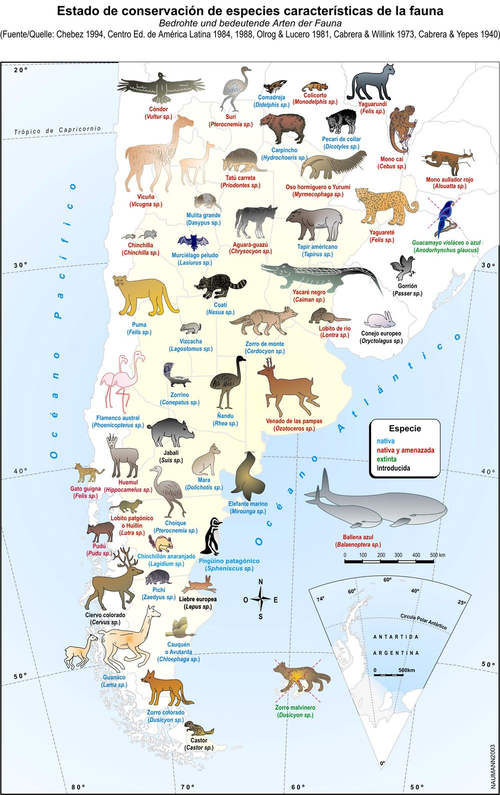
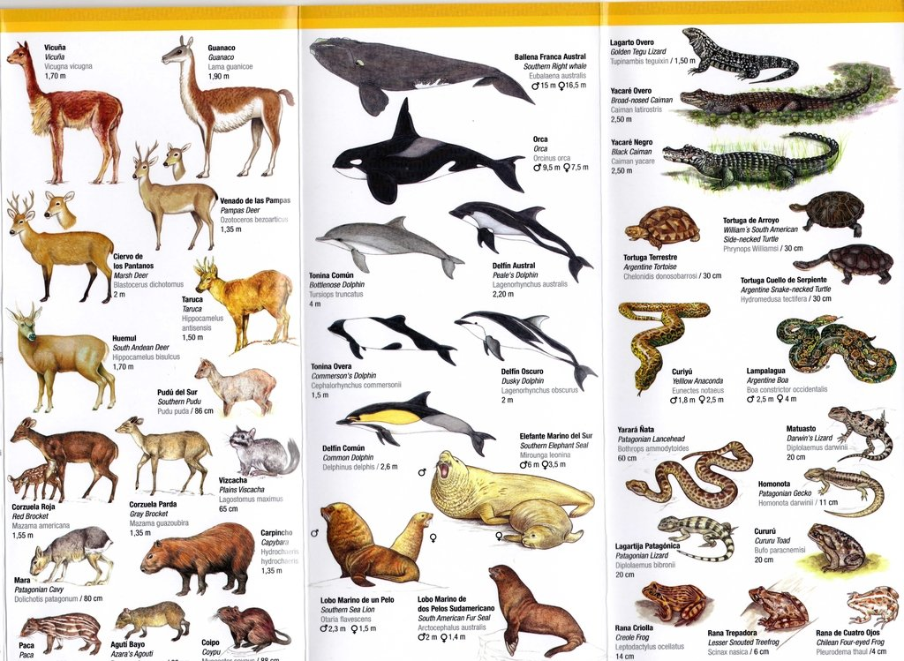
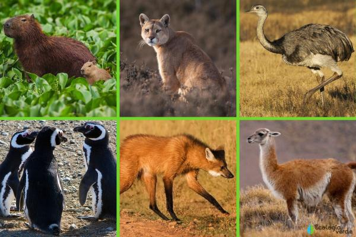
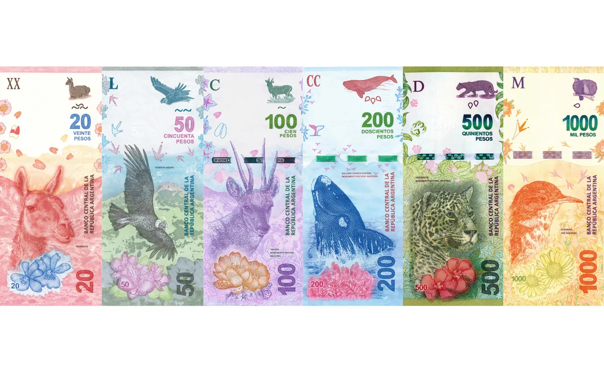

Animales de Argentina
Animales Argentina es una web diseña para todo aquel que quiera conocer y informarse un poco mas sobre las especies que habitan en nuestro país desde el norte al sur. Pasando por las más curiosas, peligrosas, extrañas, hasta llegar a la fauna exótica que fue introducida. Todo esto con historias, imágenes, videos y mucha información.
Mapa con la distribución de las principales especies.
 Imágenes de la fauna.
Principales especies argentinas.
Billetes Argentinos con su respectiva fauna autóctona.